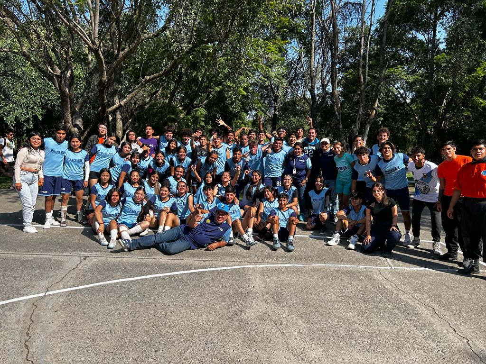

Resumen.
La adolescencia es una etapa crucial en la formación de los jóvenes, donde confluyen cambios físicos, psicológicos y sociales que pueden desembocar en problemáticas si no se encauza adecuadamente. En particular, la incidencia de conductas de riesgo como adicciones, violencia o delincuencia se ha incrementado en las últimas décadas entre jóvenes de contextos desfavorecidos. Ante esta situación, una línea de intervención prometedora es el uso de programas de actividad física-deportiva para la educación en valores y la promoción de estilos de vida saludables. Algunos estudios señalan resultados positivos de iniciativas en este sentido, como mejoras en la autoestima, reducción de conductas antisociales o adopción de hábitos favorables para la salud. No obstante, se requiere una planificación rigurosa considerando las barreras físicas y psicológicas propias de estos jóvenes, así como una perspectiva integral implicando a diversos agentes sociales. El presente estudio tiene como propósito evaluar la efectividad de un programa deportivo-educativo implementado con adolescentes en riesgo de un contexto desfavorecido. Específicamente, se analizarán cambios pre post intervención en variables como autoconcepto, conducta prosocial, consumo de sustancias y compromiso escolar. Los resultados esperados son una contribución empírica en torno al potencial de la actividad física-deportiva en la formación positiva de jóvenes vulnerables.
Palabras clave:
Educación Media Superior Inclusiva, Gestión Organizacional, Innovación Educativa, Diversidad
Abstract.
Adolescence is a crucial stage in the formation of young people, where physical, psychological and social changes converge that can lead to problems if not properly channeled. In particular, the incidence of risky behaviours such as addictions, violence or delinquency has increased in recent decades among young people from disadvantaged backgrounds. Faced with this situation, a promising line of intervention is the use of physical-sports activity programs for education in values and the promotion of healthy lifestyles. Some studies point to positive results of initiatives in this regard, such as improvements in self-esteem, reduction of antisocial behaviour or adoption of habits favourable to health. However, rigorous planning is required, considering the physical and psychological barriers of these young people, as well as a comprehensive perspective involving various social agents. The purpose of this study is to evaluate the effectiveness of a sports-educational program implemented with adolescents at risk from a disadvantaged context. Specifically, pre-post-intervention changes in variables such as self-concept, prosocial behavior, substance use, and school engagement will be analyzed. The expected results are an empirical contribution to the potential of physical-sports activity in the positive training of vulnerable young people.
Keywords:
Inclusive Higher Secondary Education, Organizational Management, Educational Innovation, Diversity
La Preparatoria 22 de Tlaquepaque es de las más recientes incorporaciones metropolitanas al Sistema de Educación Media Superior de la Red de la Universidad de Guadalajara (Red UdeG), abriendo sus puertas en el ciclo escolar 2019 A. La Preparatoria tiene el compromiso de atender la demanda educativa de nivel medio superior de la zona geográfica de Tlaquepaque, a jóvenes estudiantes de las colonias aledañas, así como estudiantes que por distintas razones no fueron admitidos en otros planteles de la Red UdeG.
La Preparatoria 22 de Tlaquepaque ofrece únicamente el plan de estudios del bachillerato general por competencias con un alto sentido humanista, centrado en el estudiante con orientación constructivista, tiene como propósito proporcionar al alumnado cultura general que le permita desenvolverse en distintos ámbitos de la vida académica, cultural y laboral. La misión particular de la preparatoria es la formación integral de ciudadanos conscientes de su entorno actual y orientados al bienestar común. La visión de este plantel es que la Preparatoria 22 de Tlaquepaque es un referente estatal de calidad educativa que transforma a su comunidad con responsabilidad social (SEMS, 2021) .
El plantel de la Preparatoria 22, cuenta con 7 edificios de aulas y laboratorios de cómputo y de ciencias experimentales, además de una biblioteca y un centro de emprendimiento, cada aula didáctica está provista de 45 butacas, un pintarrón, una pantalla, un escritorio y silla para el docente, aire acondicionado, ventanas que proporcionan luz propia y lámparas para luz artificial. Su población estudiantil está compuesta por alumnos provenientes de los municipios de Tlajomulco, El Salto, Guadalajara y del mismo municipio donde se encuentra ubicada Tlaquepaque.
La Preparatoria 22 de Tlaquepaque atiende a una población estudiantil heterogénea, proveniente de zonas con alto riesgo de consumo de drogas. Específicamente, está ubicada en la colonia Lomas de Tlaquepaque, clasificada como de atención prioritaria para prevención de adicciones. También existen diferencias significativas con otras escuelas de la zona metropolitana en cuanto al desempeño académico ya que la escuela admite al aspirante con promedio de secundaria más bajo, en general se atiende a una población con pocos hábitos de estudio y baja percepción de logro académico.
Entre los factores de riesgo que enfrenta esta población están: la facilidad de acceso a drogas en los alrededores de la escuela, la influencia negativa de pares, el contexto familiar disfuncional de algunos estudiantes, así como vulnerabilidades propias de la adolescencia como baja autoestima, percepción de logro y problemas de adaptación; estos factores han sido detectados por las áreas académicas y de tutoría de la Preparatoria 22. Se ha detectado que, en la actualidad, las problemáticas más comunes para el alumnado de la Preparatoria 22 de Tlaquepaque, se podrían reducir al ámbito de la salud, mala alimentación, ansiedad y/o depresión y adicciones. Para este documento, nos centraremos en este último, las adicciones.
Según datos del Estudio Básico de la Comunidad Objetivo realizado por el Centro de Integración Juvenil en 2018, en el cual, en función de determinados factores o condiciones de riesgo, se sectorizan las colonias de Tlaquepaque, de acuerdo a la necesidad de atención, Lomas de Tlaquepaque (colonia en la que se encuentra la Preparatoria) está clasificada como una zona de alto riesgo para el consumo de drogas, de atención prioritaria, problemática que es evidente en algunos de nuestros estudiantes y que fue agravada además por la pandemia, en concordancia con cifras nacionales.
El problema del consumo de sustancias ilícitas, es multifactorial, distintos estudios, resaltan tres factores, los macrosociales , que remiten a estructuras y dinámicas sociales (posición socioeconómica, legalidad, accesibilidad a las drogas), los factores microsociales, que hacen referencia a la interacción personal directa con grupos familiares, escolares y atributos individuales, como estado psicológico, herramientas personales para el afrontamiento y la adaptación, baja percepción de logro y autoestima negativa, en otros estudios se añaden como factores de riesgo el desapego a la comunidad escolar y la existencia de problemas escolares (Bruno et al., 1992). Así pues, frente a los factores de riesgo que la población estudiantil enfrenta, el desarrollo de estrategias eficaces, para la prevención y atención del consumo de drogas, es imperante, por una parte se contaba con información de las canalizaciones por adicciones para casos en los que el consumo de alguna droga ya resultaba ser un asunto fuera de control y por otro lado se contaba con aquellos que experimentaban por primera vez su uso por la facilidad del acceso en los alrededores del plantel, la influencia de los amigos y las características de vulnerabilidad propias de la etapa de desarrollo de nuestro alumnado. Esta situación evidencia la necesidad de implementar estrategias preventivas eficaces adaptadas a las características y factores de riesgo de esta población estudiantil, con el fin de reducir el impacto de las adicciones y promover estilos de vida saludables entre los adolescentes.
En la actualidad existe un aumento sustancial en el número de jóvenes que tienen problemas sociales relacionados con las adicciones, la violencia y la delincuencia, al detectar esta problemática se da espacio a la generación diversos espacios a dedicados a la intervención de personas afectadas por cualquiera de estas situaciones, creando programas que permiten lidiar y terminar con estas actividades desfavorecedoras por medio de la actividad física y el deporte concentrándose en la promoción de valores que prevengan las conductas adictivas en alumnos jóvenes y mejoren a su vez su calidad de vida dando espacio a alternativas positivas dentro de sus comunidades proporcionándoles beneficios no sólo físicos, también psicológicos, sociales, vocacionales, recreativos y personal (Jiménez y Durán, 2015).
Es de esta manera que se encuentra que uno de los sitios donde los jóvenes pueden desarrollarse y alejarse de los distintos vicios y adicciones que puede proporcionar un entorno descontrolado es dentro de las instalaciones escolares ya que es el lugar dónde pasan gran cantidad de su tiempo. Es decir, las escuelas son establecimientos que de alguna manera generan un ambiente favorable para explicar y fomentar comportamientos específicos del desarrollo cognitivo, conductual y saludable siendo estos un medio de apoyo para lograr mejoras en las condiciones de vida con la creación de distintos programas de actividades físicas y prácticas deportivas (Llanos-Muñoz et al., 2023) que permitan mantener alejados a los estudiantes de los problemas sociales y la dependencia a estupefacientes consiguiendo mejoras en sus estilos de vida.
Ahora bien, Heider plantea el hecho de que sólo atribuimos los resultados a causas personales o ambientales, en lugar de una combinación de ambos factores. Por lo que podemos tomar que cuando los jóvenes están expuestos a resultados tanto positivos y a la adjudicación de logros a sus rasgos individuales es más sencillo determinar que tendrán un pronóstico positivo, ya que funcionarán en relación con una serie de orgullo y satisfacción (Lalljee, 1981). Estas mejoras en la calidad de vida no se pueden lograr de la noche a la mañana, si no que se puede dar por medio de la incentivación de jóvenes a dedicar grandes esfuerzos en las actividades y prácticas deportivas, esto puede ser logrado por medio de distintos factores situacionales que generan una mejora en las motivaciones de los jóvenes estudiantes, una de las principales motivaciones que se estructuran dentro del ambiente deportivo y las actividades físicas es la búsqueda del éxito desencadenando con ello una conducta motivada y siendo un incentivo para evitar el fracaso (Monroy y Sáez, 2012). Con esto podemos observar que entra en función la teoría de motivación del logro que postula Atkinson (1964) que indica que la motivación para lograr un objetivo surge de un conflicto interno entre el deseo de tener éxito y el deseo de evitar fracasar.
Por consiguiente, otra teoría que entra en apoyo a las intenciones de los jóvenes a involucrarse en ciertos comportamientos o actividades es la Teoría de la conducta planificada (TCP) la cual indica que dichas intenciones dependen de sus actitudes personales, las normas sociales que perciben y su sentido de control o autoeficacia. Este modelo teórico se ha recomendado previamente para crear intervenciones de comunicación efectivas en salud pública. Por lo tanto, se podría esperar que un programa deportivo bien diseñado, que refuerce actitudes negativas de los jóvenes hacia las drogas, normas de rechazo al consumo y su autoeficacia, reduzca sus intenciones y comportamientos de uso de sustancias. Es decir, las expectativas sobre la capacidad preventiva de iniciativas deportivas escolares de este tipo son positivas (Peña-y-Lillo, 2019). Es así como se puede percibir que la TCP resalta las ventajas de fomentar la realización de actividad físico-deportiva mediante el refuerzo de los antecedentes motivacionales como la actitud, las normas subjetivas y el control percibido durante la adolescencia. Esta etapa del desarrollo es crucial para la formación de hábitos saludables en los jóvenes. Por ello, el apoyo a los componentes motivacionales mencionados puede promover efectivamente la práctica de ejercicio en esta población, con los consiguientes beneficios a nivel de bienestar que esto conlleva. En conclusión, fortalecer la actitud positiva, las normas sociales y el control conductual percibido es una vía prometedora para instituir la actividad física regular entre los adolescentes (Huéscar et al., 2014).
En la Preparatoria 22 se cuenta con 3 instrumentos que permiten evaluar la situación del estudiante; En Control escolar de la Preparatoria 22 se tiene un formulario (Ficha P22) que permite que cada semestre se realicen una entrevista a los alumnos de nuevo ingreso donde se tienen preguntas directas sobre algunas situaciones como: ¿cuántas veces comes al día? ¿Tienes alguna discapacidad? ¿En estos momentos tu o tu pareja están embarazados? entre otras que nos dan apertura para detección por medio de sus respuestas. El formato de derivación es un cuestionario que permite a los profesores y personal de la escuela detectar alguna situación mediante tareas o ejercicios, comentarios o acciones; con este, pueden como su nombre los dice derivar al alumno Y el tercero es por aquellos que acuden directamente al área de servicios educativos ya sea ellos o padres o madres de familia indicándonos alguna situación en casa.
Salud
Mala alimentación
Ansiedad y/o depresión
Adicciones
Asimismo, de los 3172 alumnos y alumnas que se tienen sus datos en esas fichas P22 se obtuvieron los indicadores siguientes:
23% trabaja en empleos informales para apoyar la economía de sus familias
56% acuden a la escuela en transporte público
72% cuentan con acceso a internet en algún dispositivo
25% cuenta con una computadora en casa
Como instrumento primario se realizó una encuesta a dos grupos de primer semestre que en total son 86 alumnos.
Margen de error: 5%
Nivel de confianza. 95%
Población: 86
Tamaño de muestra: 71
Se aplicó en el calendario 2022A a 71 alumnos se les preguntó qué ¿en cuál de las siguientes actividades extracurriculares te gustaría participar?: 1.-Culturales, 2.-Recreativas, 3.-Deportivas, 4.-Sociales, 5.- Académicas.
Como resultado del instrumento primario se propició material importante para las decisiones académicas en la Preparatoria 22 con el fin para este documento se refiere específicamente al resultado de las actividades deportivas en lo que se obtuvo que el 62 % prefiere realizar actividades deportivas y recreativas, 4 de cada 10 estudiantes de la prepa practican alguna actividad física dentro o fuera de la escuela
Surge el programa “Tu prepa en movimiento”, se implementa debido a que se tiene la hipótesis que con el fomento de deporte y otras actividades recreativas disminuyen las problemáticas, de ansiedad y depresión, así como las adicciones. Tu Prepa en movimiento, en donde se ofrecieron muestras de los diferentes deportes organizados por la Academia de Educación Física y Deportes se integraron los diferentes equipos deportivos, ello favoreció la disminución en la incidencia de derivaciones en el área de Orientación educativa y menos alumnos con síntomas de depresión y /o ansiedad
Los deportes de los que se organizaron equipos con 108 alumnos fueron los siguientes:
Softbol - femenil
Béisbol - varonil
Basquetbol – femenil y varonil
Futbol - femenil y varonil
Volibol - femenil y varonil
Ajedrez - femenil y varonil
Además, se organizaron actividades recreativas y de activación física:
Rallys recreativos
Torneos relámpago
Competencias de atletismo
Carrera pedestre
Equipo de coreografía
Longboard
En ellos participaron miembros de la comunidad docente: estudiantes, madres y padres de familia, docentes, administrativos, entrenadores que podemos observar en la figura 1. instituciones como la Presidencia municipal, COMUDE, Policía de Tlaquepaque, CUCEA y CUCEI, Coordinación de Cultura Física.
Ilustración 1.
Alumnos, administrativo y entrenadores al cierre de la jornada deportiva.

Nota. Elaboración propia. Con autorización de quienes aparece en la foto.
Dichas actividades favorecieron la disminución del número de canalizaciones por adicciones:
2021-A - 21 canalizaciones
2022-A - 6 canalizaciones
2022-B -
2023-A - 10 canalizaciones
2023-B - 3 canalizaciones
Es importante mencionar que se han tenido obstáculos en la participación de actividades como:
Distribución de drogas en la zona de la escuela.
Situaciones familiares que propician el consumo de drogas
Contar con una sola cancha al interior del plantel
Horarios que se empaten entre la disponibilidad del alumnado y los entrenadores
Oposición de padres y madres de familia a que sus hijos participen en el programa
A pesar de ello también se han tenido obstáculos, los cuáles se han tratado de sortear pero que en algunas ocasiones son limitantes, como el contar con una sola cancha al interior del plantel o buscar horarios que se empaten entre la disponibilidad del alumnado y los entrenadores, incluso y aunque parezca increíble, padres/madres de familia que se oponen a que sus hijos practiquen algún deporte por el hecho de que deben permanecer más tiempo en la escuela. De forma consistente con la evidencia previa, la participación de 108 estudiantes en distintas disciplinas deportivas (softbol, béisbol, baloncesto, fútbol, voleibol y ajedrez) estuvo acompañada por una reducción de entre 50% y 85% en el número de canalizaciones por adicciones respecto a períodos previos. Asimismo, las actividades recreativas adicionales (rallys, competencias atléticas, coreografías, etc.) favorecieron la motivación, el sentido de logro y el compromiso escolar en los participantes.
Es importante mencionar, otras estrategias que se consideraron importantes para el desarrollo integral y por fomentar la incorporación temprana a la investigación, el desarrollo sustentable y el compromiso social y que se han impulsado, la primera, la consolidación de la escudería Tlaqueracing la cual participa en el reto tecnológico F1 School, en el que las/los estudiantes trabajan bajo los mismos principios que una escudería de Fórmula 1 real; es decir, diseñan, modelan, prueban, manufactura y ensamblan vehículos miniatura de fórmula 1, mientras desarrollan habilidades blandas (trabajo colaborativo, comunicación oral y escrita, negociación, entre otras) y STEM (ciencia, tecnología ingeniería y matemáticas), escudería que ya clasificó para acudir a la Final Mundial en Singapur, a celebrarse en septiembre de 2023.
La segunda, son tres incipientes proyectos de emprendimiento, que fomentan el desarrollo sustentable, liderados por docentes de la preparatoria y que alrededor de 50 estudiantes ya se han incorporado a ellos.
La gestión realizada por los diferentes integrantes de la preparatoria: académicos, administrativos, operativos, entrenadores, así como las autoridades con miembros de la comunidad educativa como padres de familia, de instituciones como la Presidencia municipal, COMUDE, Policía de Tlaquepaque, CUCEA y CUCEI, Coordinación de Cultura Física; dejaron de manifiesto que sin la apropiada colaboración y gestión organizacional interdependencias no hubiera sido posible la implementación del programa. El programa “Tu prepa en movimiento” mostró resultados positivos iniciales para promover estilos de vida saludables y prevenir conductas de riesgo entre los estudiantes. Específicamente a través del fomento de actividades deportivas y recreativas, logrando con ello una considerable disminución del número de derivaciones por consumo problemático de sustancias en comparación con años previos.
En conclusión, la experiencia de la Preparatoria 22 aporta resultados preliminares alentadores sobre el potencial de los programas deportivo-educativos para la prevención conductual en entornos vulnerables. No obstante, se requieren mayores recursos de infraestructura, coordinación de horarios y trabajo multi-nivel con familias y comunidades para ampliar sustancialmente su impacto. Sobre la base actual, el programa puede seguir consolidándose como una herramienta efectiva de promoción de salud mental y prevención psico-socio-educativa en esta población estudiantil. Los responsables escolares están comprometidos a continuar trabajando en esta línea. Y aunque la educación media superior actual sigue presentando grandes retos, los esfuerzos enfocados en atender las necesidades del alumnado deben ir acompañados de la claridad de que estamos formando personas que requieren ser vistos como seres únicos y que antes de ser grandes profesionistas deben ser seres humanos íntegros y ciudadanos comprometidos con su entorno.
Atkinson, J.W. (1964). An Introduction to Motivation. Princeton, N.J.: Van Nostrand.
Bruno, D., Negrete, D., & Córdova Alcaráz, A. (1992). FACTORES PSICOSOCIALES DE RIESGO DEL USO DROGAS. http://www.cij.gob.mx/ebco2018-2024/pdf/FACTORES_DE_RIESGO_DEL_CONSUMO_DE_DROGAS.pdf
EBCO (2018) CIJ Tlaquepaque. 2018. Cij.gob.mx. http://www.cij.gob.mx/ebco2018-2024/9850/9850RYLA.html
Huéscar, E., Rodríguez-Marín, J., Cervelló, E., & Moreno-Murcia, J. A. (2014). Teoría de la Acción Planeada y tasa de ejercicio: un modelo predictivo en estudiantes adolescentes de educación física. Anales de Psicología, 30(2), 738–744. REDALYC. https://doi.org/10.6018/analesps.30.2.162331
Lalljee, M. (1981). The Psychology of Ordinary Explanations of Social Behaviour (pp. 119–138). Academic Press. https://dialnet.unirioja.es/descarga/articulo/65857.pdf
Llanos-Muñoz, R., Vaquero-Solís, M., López-Gajardo, M. Á., Sánchez-Miguel, P. A., Tapia-Serrano, M. Á., & Leo, F. M. (2023). Intervention Programme Based on Self-Determination Theory to Promote Extracurricular Physical Activity through Physical Education in Primary School: A Study Protocol. Children, 10(3), 504. https://doi.org/10.3390/children10030504
Monroy Antón, A., & Sáez Rodríguez, G. (2012). Las teorías sobre la motivación y su aplicación a la actividad física y el deporte. EFDeportes, 164(164), 8–8. http://www.efdeportes.com/efd164/las-teorias-sobre-la-motivacion-y-el-deporte.htm
Peña-y-Lillo, M. S. (2019). Utilidad de la teoría de la conducta planificada para entender el consumo de frutas y verduras: evidencia de estudios en adultos y adolescentes chilenos = Usefulness of the theory of planned behavior to understand the consumption of fruits and vegetables: evidence of studies on Chilean adults and adolescents. REVISTA ESPAÑOLA de COMUNICACIÓN EN SALUD, 10(1), 50. https://doi.org/10.20318/recs.2019.4332
SEMS. (2021). Misión y visión | Escuela Preparatoria 22. Sems.udg.mx. http://prepa22.sems.udg.mx/mision-vision
Licencia: Esta obra está protegida bajo una Licencia Creative Commons Atribución-CompartirIgual 4.0 Internacional.